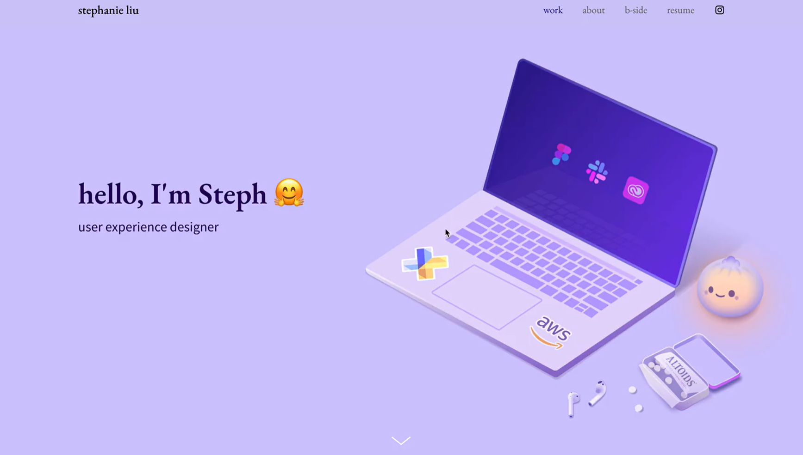

Showcase Yourself with a Professional Portfolio
A well-crafted portfolio is a powerful way to demonstrate your skills, experiences, and accomplishments to potential employers. Whether you're applying for internships, jobs, or graduate programs, a portfolio can set you apart by providing tangible evidence of your capabilities.
Portfolio Resources
- Portfolio for All Pathways
A comprehensive guide to creating a portfolio that effectively showcases your work, tailored to various career pathways. - Portfolio for UX/UI Design Pathway
A specialized checklist for students pursuing careers in UX/UI design, focusing on all relevant and necessary components.
Introduction to UX Portfolios
Section 1: What is a portfolio and why do I need one?
A portfolio is a curated collection of your work that showcases your skills, experiences, and accomplishments. It serves as a visual and tangible representation of your abilities, allowing potential employers to see the quality and scope of your work. There are many portfolio platforms available, including:
- Behance - A platform for showcasing and discovering creative work, popular among designers and artists.
- Dribbble - A community for designers to share their work, find inspiration, and connect with potential clients or employers.
- GitHub - A platform for developers to showcase their coding projects, collaborate with others, and contribute to open-source software.
- Wix - A website builder that allows you to create a personalized portfolio website with customizable templates and features.
Although there are many platforms available, you can also create a simple portfolio using Google Sites or a PDF document. The key is to choose a format that best showcases your work and is easy for potential employers to access.
Section 2: What should I include in my portfolio?
Your portfolio should include a selection of your best work that demonstrates your skills and experiences relevant to your career goals, while also tailoring it to the career you want. Some key components to consider are:
- Introduction/About Me: A brief overview of who you are, your background, and your career aspirations.
- Resume/CV: A copy of your up-to-date resume.
- Work Samples: A selection of projects, assignments, or case studies that highlight your skills and accomplishments. Include descriptions of each project, your role, the tools and technologies used, and the outcomes achieved.
- Skills and Competencies: A list of relevant skills, both technical and soft, that you possess.
- References: Endorsements from professors, colleagues, or clients that speak to your abilities and work ethic.
- Contact Information: Make it easy for potential employers to reach you by including your email address, phone number, and links to your professional social media profiles (e.g., LinkedIn).
Section 3: How can I create an effective portfolio?
- Keep it Organized: Use clear headings, sections, and navigation to make it easy for viewers to find what they're looking for.
- Showcase Your Best Work: Be selective and only include your strongest projects that align with your career goals.
- Provide Context: For each work sample, include a brief description that explains the project, your role, the tools used, and the results achieved.
- Make it Visually Appealing: Use a clean and professional design that reflects your personal brand. Avoid clutter and ensure that images and text are easy to read.
- Update Regularly: Keep your portfolio current by adding new work samples and removing outdated or less relevant content.
- Seek Feedback: Ask peers, mentors, or career coaches to review your portfolio and provide constructive feedback for improvement.
Portfolio FAQ
- How long should my portfolio be? There's no set length for a portfolio, but aim to include 5-10 high-quality work samples that effectively showcase your skills and experiences.
- Should I create different portfolios for different job applications? It's a good idea to tailor your portfolio to the specific job or industry you're applying to by highlighting relevant work samples and skills, but you don't necessarily need to create a new portfolio for every opportunity.
- Can I include personal projects in my portfolio? Absolutely! Personal projects can demonstrate your passion, creativity, and initiative. Just ensure they are relevant to your career goals.
- How do I share my portfolio with potential employers? You can share a link to your online portfolio in your resume, cover letter, or email signature. If you have a PDF portfolio, you can attach it to job applications or email it directly to employers.
See Portfolios in Action
Some examples of strong portfolios can be found online, in websites such as Cofolio. Here are a few to explore for inspiration and ideas:
Straight Forward Portfolio

Stylized Portfolio
Get Your Portfolio Reviewed
At UMSI, our students have many opportunities to showcase their portfolios and have them reviewed by
Career Coaches and Alumni mentors!
Here are some examples of portfolio presentations from recent UMSI
students:
Alumni Portfolio Review 10.23.24
For more information on how to get your portfolio reviewed, visit the UMSI Career Development Coaching to schedule an appointment with a Career Coach.